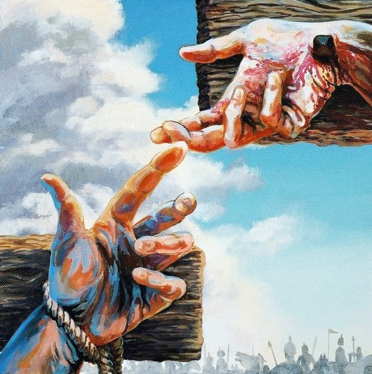

Luke’s gospel contains unique details of an event on Golgotha. Two unnamed persons are mentioned at the Crucifiction. The Gospel of Nichodemus later names them Dismas and Gestas.
“. . . Two others also, who were criminals, were led away to be put to death with [Jesus]. . . . One of the criminals who was hanged railed at him, saying, ‘Are you not the Christ? Save yourself and us!’ But the other rebuked him, saying, ‘Do you not fear God, since you are under the same sentence of condemnation? And we indeed justly; for we are receiving the due reward of our deeds; but this man has done nothing wrong.’ And he said, ‘Jesus, remember me when you come into your kingdom.’ And he said to him, ‘Truly, I say to you, today you will be with me in paradise’” (Luke 23:32-43).
This is all the Bible tells us about the “penitent thief,” but several points are clear. First, he is a criminal whose crucifixion for his actions is just. Second, he is contrite. Third, he believes in Jesus. And finally, Jesus’ unlimited mercy is clearly shown as he affirms his salvation. There is no indication that this man was a Christian, yet Jesus assures him that he is saved and even promises (in most Bible translations) that he will go to heaven that very day.
Although not formally canonized by the Catholic Church, it is believed that he was canonized by Christ himself at that moment. He is venerated as "St. Dismas" . In the Roman Catholic tradition, His feast is celebrated on March 25.
